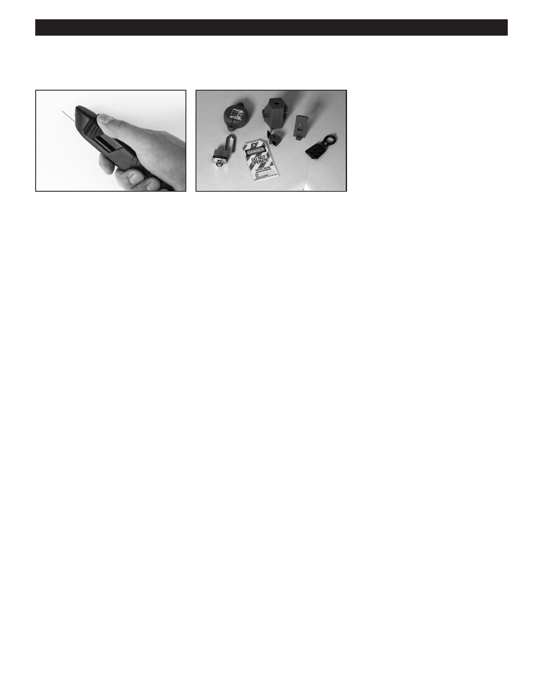

PA RT I C I PA N T R E S O U R C E G U I D E
Key Tools for Appliance Repairs (continued)
A utility knife has a sharp single-
Lockout/tagout kits should
edge razor that can be use to cut
be used to identify that a power
a variety of materials.
source, such as a main shut-off
valve or circuit breaker, is shut off
and secured.
Notes:
10